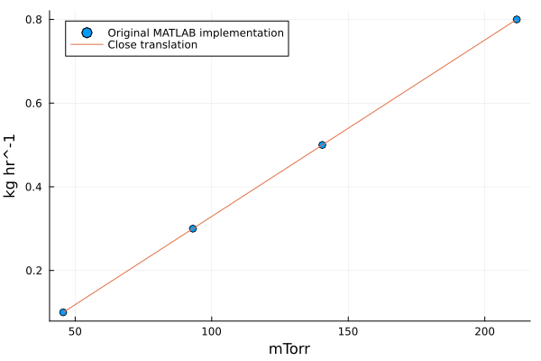
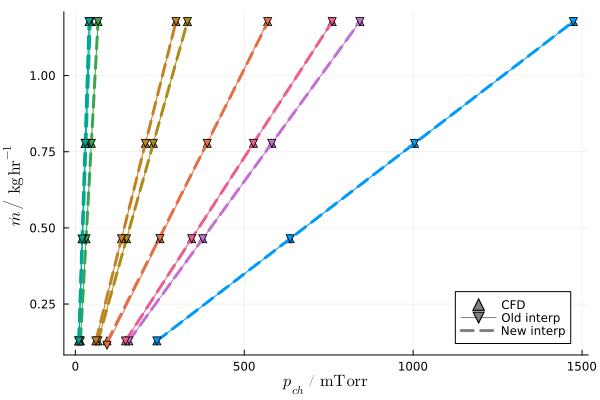

Estimating Equipment Capability
The EC-CURT model, published by Kazarin et al in 2021, provides a compact way to get a first estimate of the equipment capability line. This equipment capability limit determines one edge of the design space for the primary drying stage of lyophilization. This model is constructed by measuring equipment capability for 3 lyophilizers of various sizes, validating CFD calculations with those limits, then doing CFD calculations on a 3x3x3x2 experimental design: to evaluate on other lyophilizer geometries, a multilinear interpolation is used across this range of conditions. For full details, consult the article.
Close translation
A numerical implementation in MATLAB for the EC-CURT model was provided in the supplementary information. The CFD data (chamber pressures at all conditions) were translated from there into Julia and provided as part of LyoPronto.jl.
LyoPronto.ECCURT.eq_cap_line — Function
eq_cap_line(d, vt, l, volume)
Compute the equipment capability line for given geometry parameters. The resulting object can be called with a pressure in mTorr to get the corresponding mass flow rate in kg/hr. The line's slope and intercept can be accessed with line.k and line.b, respectively.
If provided with Unitful.Quantity inputs, the geometry parameters will be converted to the expected units (mm for lengths, m^3 for volume) before calculation, and the result will have Unitful units as well. If provided with plain floats, plain floats will be returned.
The input values are:
d: Diameter of the duct [$mm$].vt: Thickness of the butterfly valve inside the duct [$mm$]l: Length of the duct [$mm$].v: Volume of the product chamber [$m^3$].
LyoPronto.ECCURT.eq_cap_pressure — Function
eq_cap_pressure(m, D, valve_thickness, L, volume)
Call eq_cap_line to get the equipment capability line for the given geometry parameters, then evaluate that line with mass flow rate m in kg/hr to get minimum controllable pressure in mTorr.
If provided with Unitful.Quantity inputs, the geometry parameters will be converted to the expected units (mm for lengths, m^3 for volume) before calculation, and the result will have Unitful units as well. If provided with plain floats, plain floats will be returned.
The input values are:
d: Diameter of the duct [$mm$].vt: Thickness of the butterfly valve inside the duct [$mm$]l: Length of the duct [$mm$].v: Volume of the product chamber [$m^3$].
The original implementation uses MATLAB interpn with the spline method, which does a quadratic interpolation on dimensions with 3 sample points and linear interpolation on dimensions with 2 sample points. This Julia implementation uses Interpolations.jl, which only allows linear interpolations, so it will not return numerically identical results to the original MATLAB implementation, but gives the same behavior.
Here is a comparison of points from the original to this implementation:
using LyoPronto, Plots
m_test = [0.1, 0.3, 0.5, 0.8]u"kg/hr"
D_t = 120u"mm"
vth_t = 50u"mm"
L_t = 300u"mm"
V_t = 0.092u"m^3"
p_validate = [45.6, 93.1, 140.5, 211.7]u"mTorr" # Taken directly from MATLAB results
# p_test = ECCURT.eq_cap_pressure.(m_test, D_t, vth_t, L_t, V_t) # This imitates the MATLAB API
line = ECCURT.eq_cap_line(D_t, vth_t, L_t, V_t) # This is the way you will usually use this model
p_test = (m_test .- line.b) ./ line.k # This is necessary because we are working from mass flow to get pressure
# To get mass flow from pressure:
# m_check = line.(p_test)
scatter(p_validate, m_test, marker=:o, label="Original MATLAB implementation")
plot!(p_test, m_test, label="Close translation")
Newer application of same data
The original MATLAB implementation constructed lines by evaluating slope and intercept from the two higher mass flow rates at each geometry, neglecting the other two sampled points, and interpolating the slope and intercept values across lyophilizer geometries. To make full use of the reported data, we add a new implementation which interpolates the pressures instead at all four mass flow rates, then regresses a new slope and intercept for the mass flow as a function of the interpolated pressures.
This is provided via the function ECCURT.eq_cap_line_new:
LyoPronto.ECCURT.eq_cap_line_new — Function
eq_cap_line_new(d, vt, l, volume)
Compute the equipment capability line for given geometry parameters using interpolation on the pressures at the four mass flow rate sample points.
That line can be evaluated at pressure p, as a float in mTorr or with Unitful pressure to get the corresponding mass flow rate in kg/hr. To invert a resulting line, access its slope with line.k (in kg/hr/mTorr) and its intercept with line.b (in kg/hr).
If provided with Unitful.Quantity inputs, the geometry parameters will be converted to the expected units (mm for lengths, m^3 for volume) before calculation, and the result will have Unitful units as well. If provided with plain floats, plain floats will be returned.
The input values are:
d: Diameter of the duct [$mm$].vt: Thickness of the butterfly valve inside the duct [$mm$]l: Length of the duct [$mm$].v: Volume of the product chamber [$m^3$].
The new interpolation is, for the most part, indistinguishable from the original approach, both of which match the base CFD data well. We can show this by examining at some of the original CFD conditions (ECCURT.M_DOT, ECCURT.D_SAMPLE, etc.), but you will generally not need to access these variables.
using Latexify # for making a nice plot
m_orig = ECCURT.M_DOT*u"kg/hr" # the underlying values
vi = 1
v = ECCURT.VOLUME_SAMPLE[vi]
li = 2
l = ECCURT.L_SAMPLE[li]
plot(u"mTorr", u"kg/hr")
for (di, d) in enumerate(ECCURT.D_SAMPLE), (dai, da) in enumerate(ECCURT.DA_SAMPLE)
c = di+(dai-1)*3 # color picker
vt = d/da
oldline = ECCURT.eq_cap_line(d, vt, l, v)
newline = ECCURT.eq_cap_line_new(d, vt, l, v)
pch = ECCURT.PCH[:,vi, di, dai, li]
scatter!(pch, m_orig; c, marker=:utriangle, label="")
plot!(pch, newline.(pch); c, linestyle=:dash, lw=3, label="")
plot!(pch, oldline.(pch); c, marker=:dtriangle, lw=1, label="")
end
# Dummy series to make a common legend
scatter!([Inf], [Inf], c=:gray, marker=:utriangle, label="CFD")
plot!([Inf], [Inf], c=:gray, marker=:dtriangle, lw=1, label="Old interp")
plot!([Inf], [Inf], c=:gray, linestyle=:dash, lw=3, label="New interp")
# Last tinkering
plot!(xlabel="p_{ch}", ylabel="\\dot{m}", unitformat=latexify)